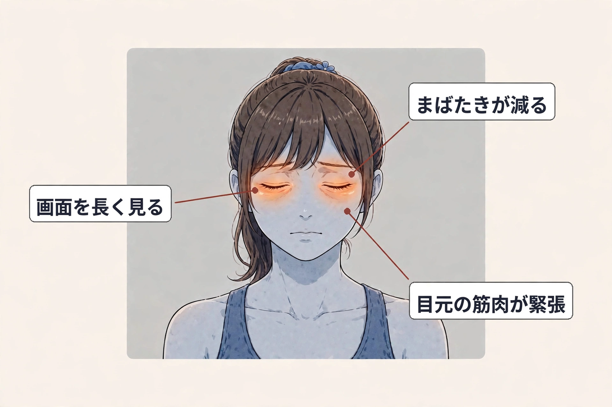

眼精疲労・まぶたの重み
美容整体ステラ・ポラリス東三国｜大阪市淀川区東三国・東三国駅徒歩5分・女性向け

目の疲れと老け顔の関係。ツボと骨格調整
パソコンやスマートフォンの画面を長く見る生活では、ピントを合わせる目の筋肉が働き続けることになります。まばたきの回数が減ることで目の乾きを感じやすく、眉間やこめかみに力が入り続けることで、まぶたの重さや目の奥の疲れとして自覚する方もいます。目の疲れは表情にも表れやすく、実年齢より疲れて見える印象につながることもあるため、見た目と疲れの両面から相談の多いお悩みです。このページでは、目の疲れの背景にある仕組みと、まぶたが軽く感じられる状態を目指す当サロンでのケア、ご自宅でできるセルフケアをご案内します。まずは下のチェックで、ご自身の状態を確かめてみてください。
ご予約はこちら（Coubic）こんなお悩みありませんか
- 夕方になるとまぶたが重く、目が開きにくい
- 目の奥が重く、眉間に力が入っていることが多い
- 画面を見たあと、ピントが合いにくい感じがする
- 「疲れてる？」と聞かれることが増えた
- こめかみを押すと気持ちよく、張りを感じる
- 目薬を使っても、すっきり感が長く続かない
- 首や肩のコリが強くなると、目の疲れも強くなる
当てはまる項目が多いほど、目まわりの筋肉の疲れと、首・肩の緊張が積み重なっている目安とされています。目の疲れは、目だけの問題ではなく、姿勢や頭まわり全体の状態と関わっています。次のセルフチェックで、今の目まわりの状態の傾向を確かめてみましょう。
簡単セルフチェック（目の動きチェック）
座ったままできる、目まわりの状態の傾向を知るための簡単な方法です。
- まっすぐ前を見て、ゆっくりと目を上下・左右に動かします。
- 次に、意識してまばたきを10回ゆっくり繰り返し、目の乾き具合を確認します。
- 目を動かすと奥が重く感じる、まばたきの途中で目が乾いてつらい場合は、目まわりの筋肉が疲れている目安と言われています。
※これは診断ではありません。ご自身の状態の傾向を知る目安としてお使いください。
眼精疲労・まぶたの重みの原因と仕組み
ピントを合わせる筋肉の働き続け
近くの画面を見続けるとき、目の中ではピントを合わせる筋肉が緊張し続けた状態になります。短い休憩では抜けきらない緊張が積み重なると、目の奥の重さや、遠くを見たときのピントの合いづらさとして感じやすくなると言われています。図1のように、目の疲れは目まわりだけでなく、眉間・こめかみ・首・肩の緊張ともつながっています。

図1 目の疲れで起こりやすい変化と、目まわりがゆるんだ状態のイメージ。目の状態には個人差があります。
まばたきの減少と乾き
画面に集中していると、まばたきの回数は普段より大きく減ることが知られています。まばたきが減ると目の表面が乾きやすくなり、乾きを補おうとして目まわりに余計な力が入ることもあります。目の乾きと疲れは互いに強め合う関係にあり、まぶたの重さの感覚にもつながっていきます。
眉間・こめかみの緊張
目が疲れてくると、無意識に眉間やこめかみに力が入り、しかめ顔のような緊張が続くことがあります。この緊張は、まぶたの重さの感覚を強めるだけでなく、表情の印象にも影響します。疲れていないのに「疲れ顔」に見える背景には、こうした目まわり・額まわりの緊張が隠れていることがあります。
首・肩・姿勢とのつながり
画面をのぞき込む姿勢では頭が前に出やすく、首や肩の緊張が強まります。首まわりは頭部への巡りの通り道でもあるため、この緊張が目の疲れ感とも関わると考えられています。目まわりのケアとあわせて、首・肩・姿勢の土台をゆるめることが、目の軽さを取り戻すうえで大切なポイントになります。
セルフケアで足りる場合・サロンケアが向く場合
疲れが軽く、画面作業の休憩や蒸しタオルで目が軽くなる日が多い場合は、まずご自宅でのセルフケアを続けて様子を見る方法があります。一方で、こめかみや眉間の緊張が自分ではゆるめにくい、首・肩のコリと一緒に目も限界に感じる、大切な予定に向けて疲れ顔の印象を整えたいという場合は、サロンでのケアが向いている目安になります。サロンでは、目まわりだけでなく頭・首・肩を含めてゆるめることで、施術後に「視界が明るくなった」「まぶたが軽い」と感じやすい状態を目指します。どちらが正解というものではなく、今の状態に合わせて選ぶことが大切です。
当サロンでのケア
当サロンの目の疲れケアは、「目まわりの緊張をゆるめ、頭全体が軽く感じられる状態」を目指す組み立てです。目の周囲のツボを意識しながら、部位と目的に合わせて3つの手技を組み合わせます。
もみほぐし：こめかみ・眉まわり・目の周囲を、ツボを意識しながらやさしい圧で丁寧にほぐします。眉間の力を抜き、まぶたの重さをゆるめることを目的に進めます。
アロマオイルマッサージ：首や肩の緊張をオイルでゆるめ、頭部への巡りが流れやすい状態を目指します。香りに包まれながらほぐれる、リラックス感の高いケアです。
美容整体：頭の位置と首のラインを整え、画面をのぞき込む姿勢で負担がかかりやすい土台を整えることを目的に進めます。
ケアを通して目指すのは、こんな変化です。
- まぶたが軽くなり、目が開きやすい感覚へ
- 視界が明るくなったような、すっきりした体感へ
- 眉間の力が抜けて、表情がやわらかく見える印象へ
- こめかみの張りがゆるんで、頭全体が軽く感じられる状態へ
- 首・肩まで軽くなり、仕事終わりの疲れ感がやわらぐような感覚へ
施術中は目を閉じて休んでいただく時間を大切にし、終わったあとに視界が明るくなったような感覚や、まぶたの軽さを目指します。施術の前後で感覚の違いを一緒に確認しながら、画面作業の合間に取り入れやすい休憩の取り方もご案内します。

施術の流れ
ご来店後、気になる部位やお悩み、ご希望の強さなどをうかがいます。完全個室のため、周りを気にせずお話しいただけます。
目まわりやこめかみの張り、首・肩の緊張などを一緒に確認し、その日の状態に合わせた施術の進め方をご案内します。
美容整体を中心に、ご希望に応じてアロマオイルマッサージ、もみほぐしを組み合わせて進めます。強さは途中でも調整できます。
施術後の状態を確認し、ご自宅で続けやすいセルフケアのポイントをお伝えします。次回の目安についても、ご希望があればご案内します。
料金
| コース | 通常価格 | キャンペーン価格（12/25まで） |
|---|---|---|
| 80分 | 8,000円 | 3,000円 |
| 100分 | 10,000円 | 4,000円 |
| 120分 | 12,000円 | 5,000円 |
クリスマスキャンペーンは12月25日まで、ご新規様もリピーターの方も対象です。施術内容は当日の状態とご希望に合わせて組み立てます。
ご自宅でできるセルフケア
- 画面作業の休憩ルール：20分ごとに20秒ほど、遠くを見る休憩を取ります。1日を通してこまめに目を休ませることが目安です。
- 蒸しタオルで温める：目元に蒸しタオルを当てて5分ほど温めます。1日1回、仕事終わりや入浴後のリラックスした時間に行うのがおすすめです。
- まばたきの意識：画面作業中は、意識してゆっくりまばたきを繰り返します。乾きを感じたら無理をせず目を閉じて休ませてください。
- こめかみのセルフマッサージ：こめかみを指の腹で小さく円を描くようにやさしくほぐします。左右各30秒ほど、目の疲れを感じたタイミングで行ってください。
ご自宅でのケアに：セルフケア資料ライブラリ（無料）
このお悩みに合わせたセルフケアの考え方を、無料の資料ライブラリでご紹介しています。
セルフケア資料ライブラリを開く →
受診の目安
視力の急な変化や目の痛み、見え方の異常がある場合は、施術の前に眼科の受診をおすすめします。また、頭痛や吐き気を伴う場合も、医療機関でご相談ください。
よくある質問
Q. 初めてでも大丈夫ですか？
はい。当サロンは完全予約制・完全個室で、1日3組までのご案内です。最初にカウンセリングで目まわりの状態や気になる部位をうかがい、無理のない内容から始めます。施術の前後で「まぶたが軽くなった」「視界が明るくなった」といった感覚の違いを一緒に確認しながら進めますので、初めての方も安心してご利用いただけます。
Q. 施術は痛いですか？
強さは、ご希望をうかがいながら調整します。目まわりはデリケートなため、やさしい圧を基本に、こめかみや眉まわりを丁寧にほぐしていきます。感じ方には個人差がありますので、施術中も遠慮なくお声がけください。
Q. コースはどう選べばいいですか？
80分・100分・120分のコースがあり、ケアしたい部位の広さやお時間のご都合に合わせて選べます。目の疲れのケアで目まわりから頭、首、肩までゆっくり整えたい方には、100分が選ばれることが多いコースです。迷われる場合は、ご予約の際にお気軽にご相談ください。
Q. 場所と予約方法を教えてください。
大阪市淀川区東三国、東三国駅から徒歩5分です。完全予約制のため、予約サイト（Coubic）またはLINE公式アカウントからご予約をお願いしています。
Q. 男性も受けられますか？
当サロンは女性向けのため、男性の方は、同じ東三国の男性専用整体院「北辰堂」をご案内しています。
施術者について
平賀建人（施術歴30年）
鍼灸師・登録販売者・アロマセラピスト・パーソナルトレーナーの資格を持ち、美容整体を中心に、アロマオイルマッサージ、もみほぐしを、その日の状態とご希望に合わせて組み合わせて施術します。このページの内容は、施術者の知識と経験をもとに作成しています。

料金・ご予約
ご新規様もリピーターの方も 12/25まで
80分 3,000円／100分 4,000円／120分 5,000円
通常価格は80分8,000円／100分10,000円／120分12,000円です。施術内容はご希望に合わせて組み立てます。
営業時間：月〜土 17:00〜23:00／日 10:00〜23:00（完全予約制）｜電話：080-2468-3086
大阪府大阪市淀川区東三国2丁目25番4号101（東三国駅徒歩5分）